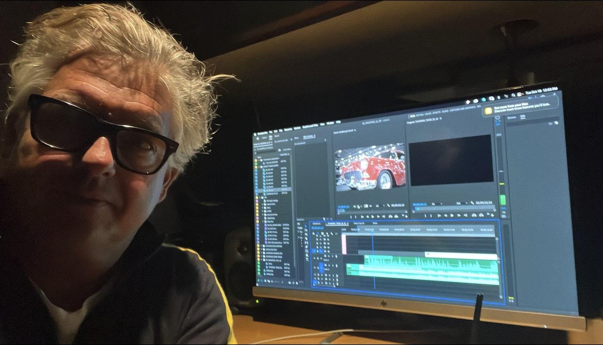

00:24:11:19 — ABOUT
About

Professional Summary
Multi-camera Live Director and Editor with 35+ years of experience (1988–present) across a wide range of genres and formats. Career spans from tape-to-tape linear editing through modern digital workflows, with expertise in live sports and music broadcast, fast-paced commercial and trailer editing, and feature-length documentary storytelling. Equally versatile across the full spectrum of post production — from deadline-driven broadcast turnarounds to long-form, character-driven narrative work; from short-form, fast-paced, high-energy segments to scripted, multi-camera dramatic pieces. Decades spent collaborating closely with directors, producers, and creative teams to shape story and tone, balanced by an equally strong ability to work independently — conceiving, shooting, and finishing projects solo from start to finish.
Taylor has moved into feature-length documentary film projects for the dynamic range and emotion available through complex, character-driven storytelling. As an expert Avid and Adobe Premiere Pro editor, he remains in demand to direct, edit, and finish scores of projects each year.
Live multi-camera directing has been a consistent focus over the past decade, with music and sports coverage as the primary expertise — most recently Major League Rugby matches live on CBS Sports Network. Music projects include large festivals such as Hangout Fest, Bumbershoot, Global Dance Fest, and Kaaboo, artists including Eric Clapton, the Pretenders, Mötley Crüe, Vampire Weekend, and Greta Van Fleet, and more intimate projects for Universal Music Group.
Taylor has served as Director and Editor for Farm Aid's annual benefit concert broadcast since 2010.
Sea of Darkness won the award for Best Documentary at the 2010 X Dance Film Festival.
Sea of Darkness is a largely talking head piece but told just as much through its tightly-edited visuals.— Erik Childress, efilmcritic.com
…stock footage and the film's intense editing does a wonderful job of keeping the audience in the loop at all times…— Jeremy Kirk, wearemoviegeeks.com
Before the transition from short form to long form, Taylor worked extensively for Sony Pictures, Warner Brothers, FOX, and Buena Vista marketing departments, finishing commercial spots, trailers, and promos on Avid Symphony for films including Once Upon a Time in Mexico, Charlie's Angels, Underworld, Spider-Man, S.W.A.T., Hellboy, 50 First Dates, and Big Fish, among others.
At New Wave Entertainment on the Sony lot, he cut trailers, commercials, and DVD bonus features — behind-the-scenes pieces and director and cast commentary — along with reality television and episodic series.
Taylor edited action sports coverage for over a decade, including PBA Windsurfing events, North Face Park and Pipe, and the Burton European and US Open snowboarding competitions.
Taylor edited Supercross for Fox Sports, and TORC — The Off-Road Championship — racing series broadcasts.
Sports programming was the main focus in the early stages of Taylor's career, editing competitive events for major broadcast networks and cable outlets — including NASCAR Racing for Fox Sports and Speed Channel, and the U.S. Pro Ski Tour for NBC & ABC. Taylor was a key member of the group that pioneered Extreme Sports Television, directing and editing the weekly half-hour series The Extremists from 1989 to 1996. He began his career as an online editor in tape-to-tape linear bays.